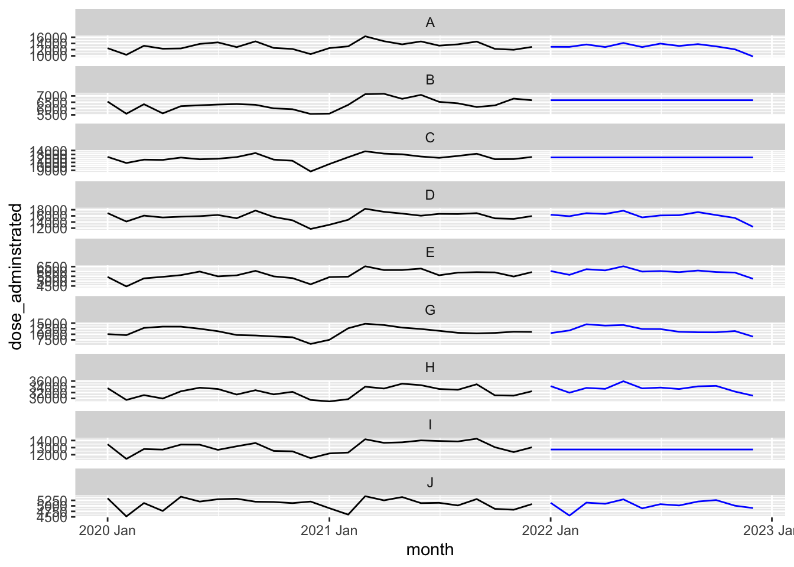
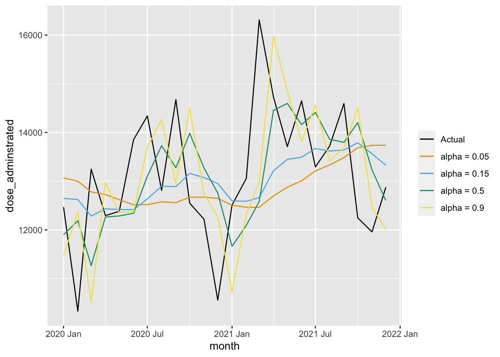
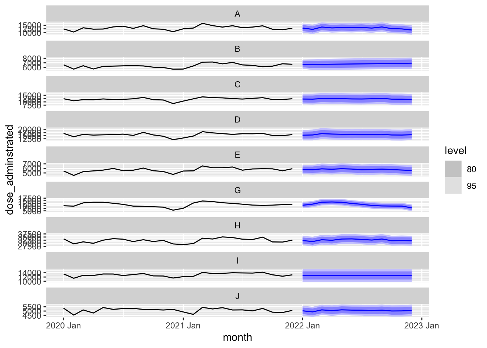

── Conflicts ────────────────────────────────────────── tidyverse_conflicts() ──
✖ dplyr::filter() masks stats::filter()
✖ lubridate::interval() masks tsibble::interval()
✖ dplyr::lag() masks stats::lag()
ℹ Use the conflicted package (<http://conflicted.r-lib.org/>) to force all conflicts to become errors
Which model is returned in, what are its components and parameter values?
Use tidy():
fit_ets |>tidy()
# A tibble: 98 × 4
region .model term estimate
<chr> <chr> <chr> <dbl>
1 A automatic_ets alpha 0.000101
2 A automatic_ets gamma 0.000100
3 A automatic_ets l[0] 12930.
4 A automatic_ets s[0] -3138.
5 A automatic_ets s[-1] -833.
6 A automatic_ets s[-2] 123.
7 A automatic_ets s[-3] 858.
8 A automatic_ets s[-4] 260.
9 A automatic_ets s[-5] 1021.
10 A automatic_ets s[-6] -96.9
# ℹ 88 more rows
You can also observe the values corresponding to level, trend,and seasonal components in ETS framework. Each column corresponds to one components.
Complete the R code and run to observe the selected model components:
fit_ets |>components()
# A dable: 1,047 x 8 [1M]
# Key: region, .model [9]
# : dose_adminstrated = (lag(level, 1) + lag(slope, 1)) * lag(season,
# 12) * (1 + remainder)
region .model month dose_adminstrated level season remainder slope
<chr> <chr> <mth> <dbl> <dbl> <dbl> <dbl> <dbl>
1 A automatic_ets 2012 Jan NA NA -21.8 NA NA
2 A automatic_ets 2012 Feb NA NA -40.9 NA NA
3 A automatic_ets 2012 Mar NA NA 740. NA NA
4 A automatic_ets 2012 Apr NA NA -95.4 NA NA
5 A automatic_ets 2012 May NA NA 1223. NA NA
6 A automatic_ets 2012 Jun NA NA -96.9 NA NA
7 A automatic_ets 2012 Jul NA NA 1021. NA NA
8 A automatic_ets 2012 Aug NA NA 260. NA NA
9 A automatic_ets 2012 Sep NA NA 858. NA NA
10 A automatic_ets 2012 Oct NA NA 123. NA NA
# ℹ 1,037 more rows
Could you describe what each row and column represent?
Generate forecasts using ETS
Now, we can forecast with the trained ETS model. Complete and run the following code to produce forecasts:
Warning: There was 1 warning in `filter()`.
ℹ In argument: `time_in(month, ...)`.
Caused by warning:
! `yearmonth()` may yield unexpected results.
ℹ Please use arg `format` to supply formats.

Detrmine model components and parameters manually
You can use the following specific functions: error(), trend(), season() to manually specify the type of pattern (“N”, “A”, “Ad”, “M”) and also their corresponding parameters, if you wish.
In the following R-chunk, you can change parameters and the type of pattern to see their impact on fitting and forecast
Warning: There was 1 warning in `filter()`.
ℹ In argument: `time_in(month, ...)`.
Caused by warning:
! `yearmonth()` may yield unexpected results.
ℹ Please use arg `format` to supply formats.

Could you describe how the value of smoothing constant , alpha affects the forecast?
ARIMA
Specify and train ARIMA model
If you want this function automatically determines the order of autoregressive and moving average orders and their parameters, then you don’t need to provide arguments inside ARIMA(). The function will examine different models (combinations of p=0,1,2,.. and q =0,1,2,.., P=0,1,2,.. and Q =0,1,2,..) and return the one with lowest AICc.
Complete the following code to train an automatic ARIMA model on the data:
If we don’t provide terms inside ARIMA(), then it is an automatic model! It will examine different models and return the one with lowest AICc.
let’s now observe the fitted model, fit_arima:
fit_arima
# A mable: 9 x 2
# Key: region [9]
region automatic_arima
<chr> <model>
1 A <ARIMA(0,0,1)(2,0,1)[12] w/ mean>
2 B <ARIMA(0,1,3) w/ drift>
3 C <ARIMA(1,1,1)(2,0,0)[12]>
4 D <ARIMA(1,0,0)(1,0,0)[12] w/ mean>
5 E <ARIMA(0,1,3)(1,0,1)[12]>
6 G <ARIMA(2,0,1)(2,1,0)[12]>
7 H <ARIMA(1,1,1)(2,0,0)[12]>
8 I <ARIMA(0,0,0) w/ mean>
9 J <ARIMA(0,1,1)(0,0,2)[12]>
What type of data structure is it? What each row and column represent?
Warning: There was 1 warning in `filter()`.
ℹ In argument: `time_in(month, ...)`.
Caused by warning:
! `yearmonth()` may yield unexpected results.
ℹ Please use arg `format` to supply formats.

Determine model components manually
You can also specify the order of p,q,P,Q using specific function pdq() and PDQ()manually:
# A tibble: 27 × 3
region .model AICc
<chr> <chr> <dbl>
1 A arima_manual1 1910.
2 A automatic_arima 1912.
3 A arima_manual2 1925.
4 B arima_manual1 1647.
5 B automatic_arima 1648.
6 B arima_manual2 1662.
7 C automatic_arima 1944.
8 C arima_manual1 1945.
9 C arima_manual2 1966.
10 D arima_manual1 1962.
# ℹ 17 more rows